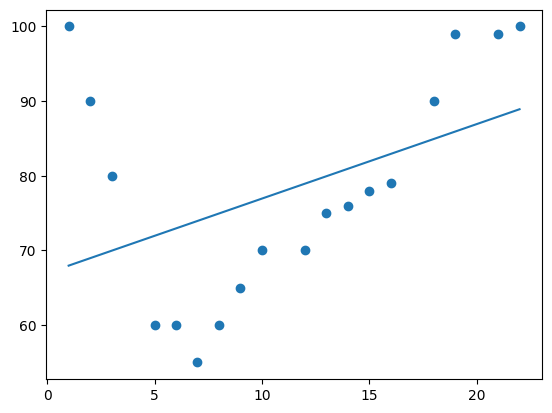
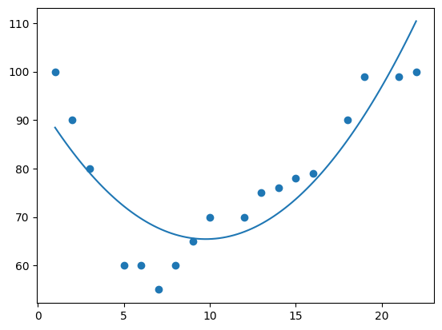
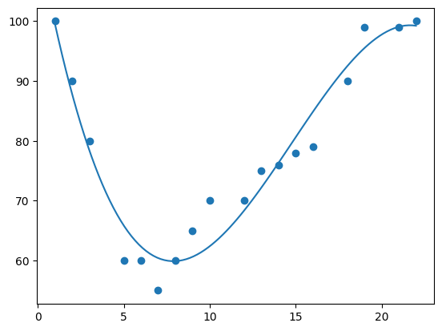
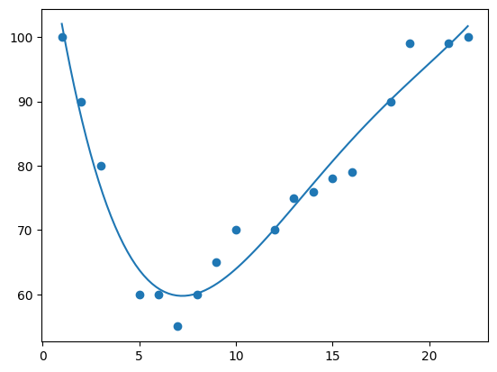
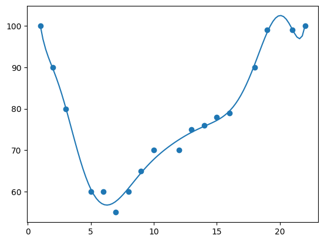

Correlation and Regression Activity
I practised calculating correlations and making regression models with Python.
I started by generating random datasets and calculating the Pearson correlation coefficient.
from numpy.random import randn
from matplotlib import pyplot as plt
from scipy.stats import pearsonr
data1 = 20 * randn(1000) + 100
data2 = data1 + (10 * randn(1000) + 50)
plt.scatter(data1, data2)
plt.show()
corr = pearsonr(data1, data2)
print("Pearson's correlation: %.3f" % corr.statistic)

Pearsons correlation: 0.893
I added more variance to data2 - the correlation went down.
data2 = data1 + (20 * randn(1000) + 50)
plt.scatter(data1, data2)
plt.show()
corr = pearsonr(data1, data2)
print("Pearson's correlation: %.3f" % corr.statistic)

Pearsons correlation: 0.698
I added even more variance to data2 - the correlation went further down.
data2 = data1 + (50 * randn(1000) + 50)
plt.scatter(data1, data2)
plt.show()
corr = pearsonr(data1, data2)
print("Pearson's correlation: %.3f" % corr.statistic)
Pearsons correlation: 0.333
Next I fitted a linear regression model to the random data.
from scipy import stats data2 = data1 + (10 * randn(1000) + 50) model = stats.linregress(data1, data2) def model_function(x): return model.slope * x + model.intercept mymodel = list(map(model_function, data1)) plt.scatter(data1, data2) plt.plot(data1, mymodel, "y") plt.show()

Next I created a multiple linear regression model using house price data.
import pandas
from sklearn import linear_model
df = pandas.read_csv("real_estate.csv")
df.head()
| No | X1 transaction date | X2 house age | X3 distance to the nearest MRT station | X4 number of convenience stores | X5 latitude | X6 longitude | Y house price of unit area | |
|---|---|---|---|---|---|---|---|---|
| 0 | 1 | 2012.917 | 32.0 | 84.87882 | 10 | 24.98298 | 121.54024 | 37.9 |
| 1 | 2 | 2012.917 | 19.5 | 306.59470 | 9 | 24.98034 | 121.53951 | 42.2 |
| 2 | 3 | 2013.583 | 13.3 | 561.98450 | 5 | 24.98746 | 121.54391 | 47.3 |
| 3 | 4 | 2013.500 | 13.3 | 561.98450 | 5 | 24.98746 | 121.54391 | 54.8 |
| 4 | 5 | 2012.833 | 5.0 | 390.56840 | 5 | 24.97937 | 121.54245 | 43.1 |
X = df[["X2 house age", "X3 distance to the nearest MRT station", "X4 number of convenience stores"]] y = df["Y house price of unit area"] regr = linear_model.LinearRegression() regr.fit(X.values, y)
I used the model to predict the price of unit area for a house with with these parameters.
# house age: 10 # distance to nearest MRT station: 100 # number of convenience stores: 7 print(regr.predict([[10, 100, 7]])) [48.99291231]
Finally I tried polynomial models with different dimensions. The data is the speed of cars passing a toll booth at different times.
import numpy import matplotlib.pyplot as plt x = [1, 2, 3, 5, 6, 7, 8, 9, 10, 12, 13, 14, 15, 16, 18, 19, 21, 22] y = [100, 90, 80, 60, 60, 55, 60, 65, 70, 70, 75, 76, 78, 79, 90, 99, 99, 100]
1 dimension produces a straight line.
mymodel = numpy.poly1d(numpy.polyfit(x, y, 1)) myline = numpy.linspace(1, 22, 100) plt.scatter(x, y) plt.plot(myline, mymodel(myline)) plt.show()

2 dimensions produces a curve.
mymodel = numpy.poly1d(numpy.polyfit(x, y, 2)) myline = numpy.linspace(1, 22, 100) plt.scatter(x, y) plt.plot(myline, mymodel(myline)) plt.show()

3 dimensions produces a curve which fits the data well.
mymodel = numpy.poly1d(numpy.polyfit(x, y, 3)) myline = numpy.linspace(1, 22, 100) plt.scatter(x, y) plt.plot(myline, mymodel(myline)) plt.show()

4 dimensions produces a curve which is starting to be "overfitted".
mymodel = numpy.poly1d(numpy.polyfit(x, y, 4)) myline = numpy.linspace(1, 22, 100) plt.scatter(x, y) plt.plot(myline, mymodel(myline)) plt.show()

10 dimensions produces a curve which has definitely been "overfitted".
mymodel = numpy.poly1d(numpy.polyfit(x, y, 10)) myline = numpy.linspace(1, 22, 100) plt.scatter(x, y) plt.plot(myline, mymodel(myline)) plt.show()

The best fit for this data appears to be 3 dimensions.